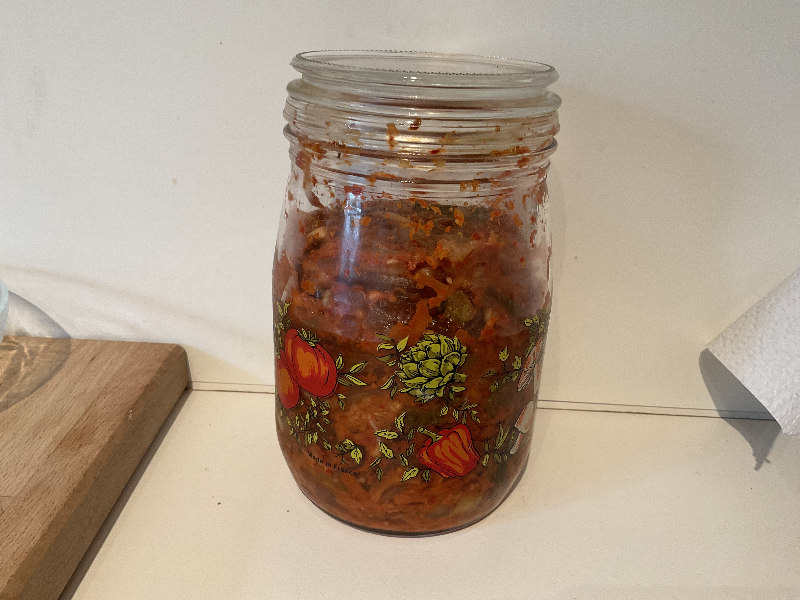

Zutaten:
550 g Chinakohl 1 El Salz 80 g Karotte 100 g Rettich oder Radieschen 2 Frühlingszwiebeln 80 g weiße Zwiebel 2 Knoblauchzehen 1 El Sojasauce 2 El Gochugaru (koreanische Chiliflocken) 2 El Maesil Cheong (koreanischer Pflaumensirup) oder Honig/Zucker 1 handvoll gekochter Reis 2 El Wasser
Zubereitung:
Den Chinakohl klein schneiden, mit dem Salz vermischen und etwas kneten. Anschließend für 30 Minuten stehen lassen, auswaschen und ausdrücken. Rettich, Karotten und Frühlingszwiebel klein schneiden und zu dem Chinakohl geben. Für die Paste: Knoblauch, Zwiebeln, Sojasauce, Gochugaru, Honig, den Reis und das Wasser mischen und pürieren. Alles vermischen und in ein nicht(!) luftdicht verschlossenes Gefäß füllen.
Quelle: https://fermentation.love/einfache-rezepte/mak-kimchi/.